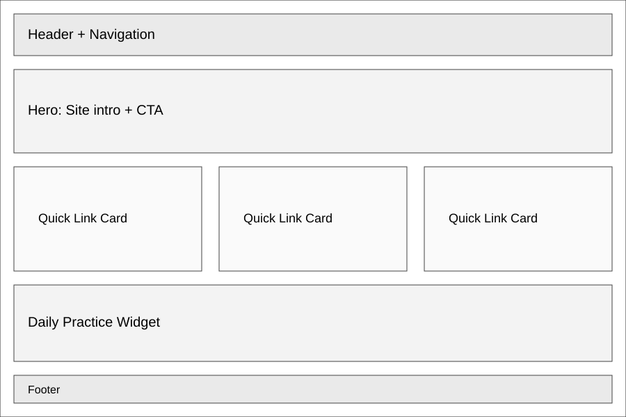
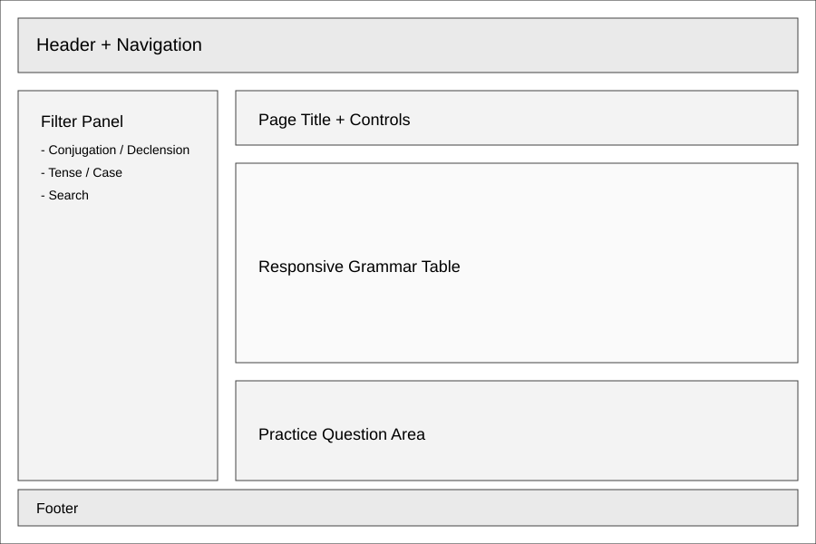

Overview
Purpose
Oppidum Meum is a study website for beginning and intermediate Latin learners. The purpose is to collect verb conjugations and noun/adjective declensions in one place with clear charts, examples, and memory aids so students can review faster and feel more confident during homework, reading, and quizzes.
Audience
The primary audience is high school and college students taking Latin, plus independent learners who want a quick grammar reference. A secondary audience is tutors and teachers who want a simple visual resource for review activities.
Dynamic elements
JavaScript will power interactive grammar tools: a filterable table for conjugations/declensions by tense, mood, person, case, and declension; expandable chart rows for examples; a random practice generator that shows a form and asks for parsing; and a score tracker using localStorage so users can monitor progress between sessions.
Branding
Website Logo
Style Guide
Color Palette
Palette URL: https://coolors.co/8c1c13-f2d9a0-f6c6a8-ead7c8| Primary | Secondary | Accent 1 | Accent 2 |
|---|---|---|---|
| #8C1C13 | #F2D9A0 | #F6C6A8 | #EAD7C8 |
Typography
Heading Font: Cinzel (serif display)
Paragraph Font: Source Sans 3 (sans-serif)
Normal paragraph example
Latin can feel overwhelming when every chapter introduces new endings. This site keeps grammar organized by pattern so learners can quickly find the forms they need and compare similar structures side by side.
Colored paragraph example
Example: puellae can mean "of the girl" (genitive singular), "to/for the girl" (dative singular), or "girls" (nominative plural). The charts and parsing practice help students identify meaning from context.
Navigation
Content
Home page
Home will introduce the purpose of the site, include quick links to all conjugation and declension charts, and feature a short "How to Use This Site" section. It will include a featured study tip, a "form of the day" widget, and links to practice activities.
Conjugations page
This page will organize verb forms by conjugation (1st-4th and irregular) and by tense/mood/voice. Users can filter tables and expand examples for common verbs such as amo, moneo, duco, audio, and sum. A practice section will generate random forms for parsing.
Declensions page
This page will organize noun and adjective endings by declension and case. It will include singular/plural charts, gender notes, and examples for first through fifth declensions plus common irregular forms. Users can toggle endings-only mode or full examples mode.
Pseudo Code
CHECK THE COMMENTS OF THIS PAGE'S SOURCE CODE FOR PSUEDO CODE. THIS IS HOW I USED TO DO PSUEDOCODE AT MY INTERNSHIP.
Wireframes
Create two wireframes for your site. One for each page and list them here
Home
The home wireframe includes a hero section, quick-access grammar cards, and a preview of the daily practice widget directly above the footer.

Conjugations and Declensions layout
The grammar wireframe uses a left filter panel and a main content area with responsive tables. On mobile, filters move to a top dropdown and tables become stacked cards for readability.
